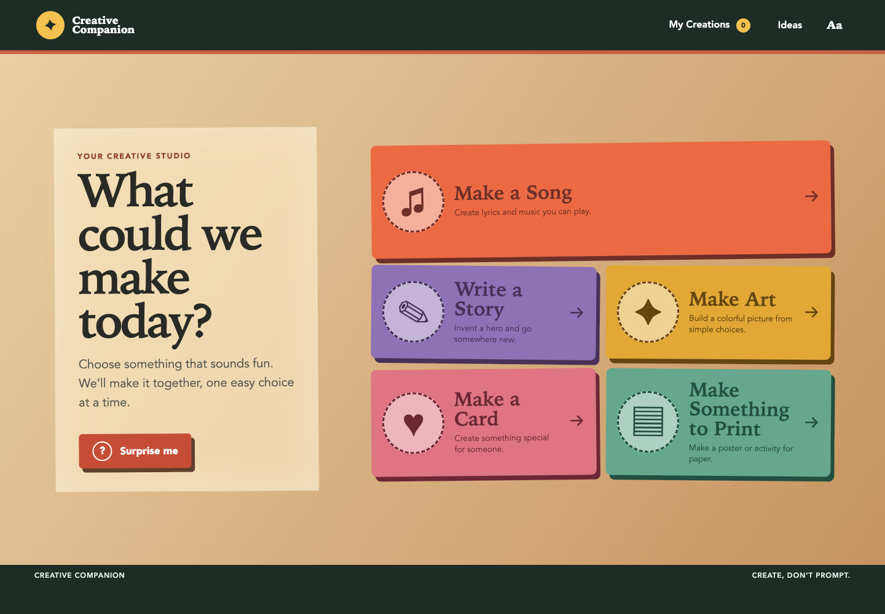
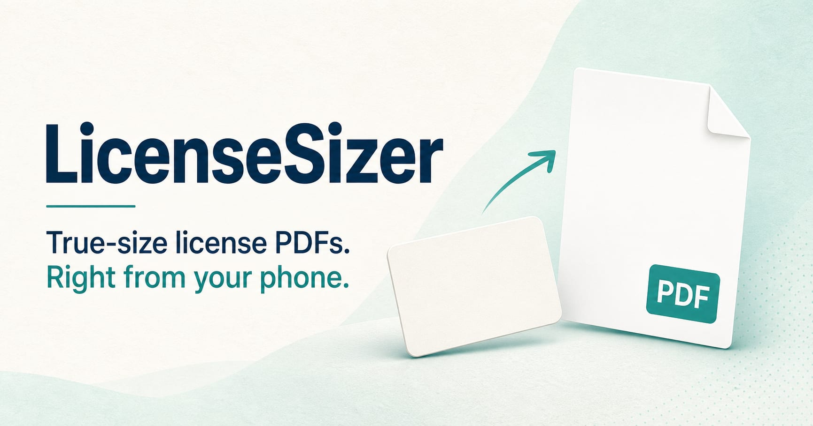

LIVE PRODUCT
LIVE PRODUCTVinLocate
Know where the vehicle was last seen. Get back to the work.
Some ideas make the day easier. Some simply make it more interesting. This is a place for both.
VinLocate helps dealership teams find a vehicle by showing where it was last scanned.
Proposal Studio turns a vehicle quote and brochure into a customer-ready proposal for dealership sales advisors.
At BMW of Pittsburgh and MINI of Pittsburgh, end-of-month demand sometimes pushed deals into the next month because the finance team couldn’t finish the paperwork in time. In November 2023, we brought in a remote finance team to handle the overflow. It became part of our regular delivery process.
We scheduled finance before vehicle pickup. Customers could meet with finance by phone or Zoom and sign eligible paperwork electronically. We built a status portal so advisors could see where each deal stood, and finance managers introduced themselves to advisors as soon as a deal came in.
Customers spent less time waiting at delivery, advisors could see what was done and what was left, and we saw higher finance revenue per vehicle. The dealership team’s work earned the Innovation Award in the Reynolds and Reynolds Automotive Amplifiers Contest.
LIVE PRODUCTKnow where the vehicle was last seen. Get back to the work.
Turn a quote and brochure into a clearer customer presentation.
Give everyone a simple way to add their view of the day.

PRIVATE-PREVIEW V1Start with what you want to make. Not how to write a prompt.

PRIVATE PRODUCT BUILDA clearer handoff from a document photo to a useful PDF.
Turn vehicle documents into a clearer, more useful listing description.
Showing 6 projects.
Tell me about it. The messy workflow, the idea in your notes, the thing you’ve been meaning to make.
Start a conversationThe button above opens your email app. Nothing is submitted here.